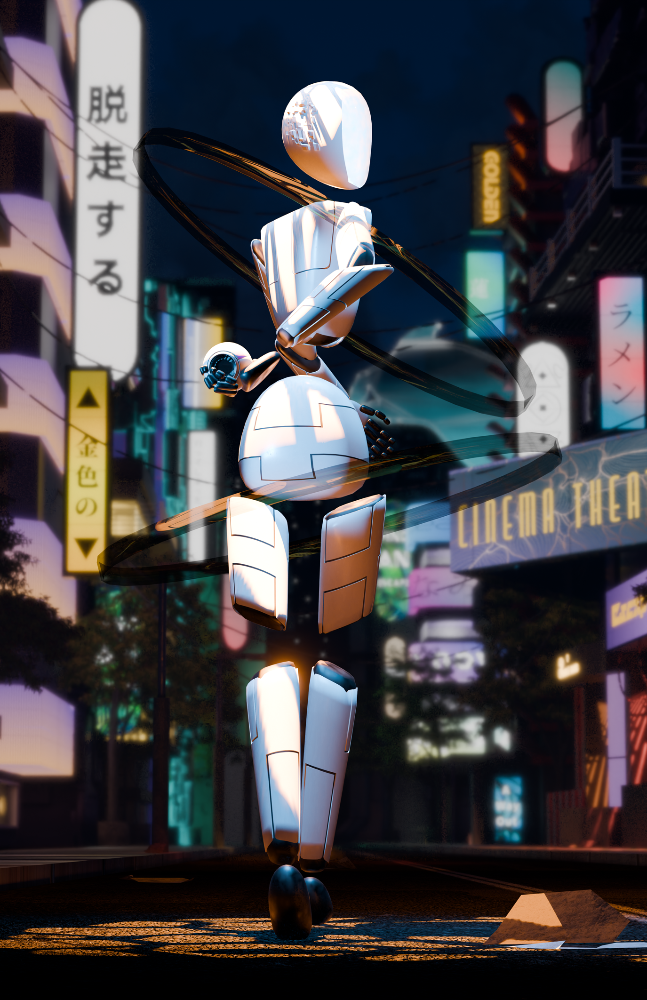

This piece is made with a combination of 3d models for the city and figure and illustrations for the signs. This piece is set on the fictitious planet of Voltair. The planet has been fractured and does not rotate on its own access leaving some parts of the planet in darkness for months on end, these sides are called sunset sides. This is the city named Vinuai but is nicknamed the amber city do to its lighting.